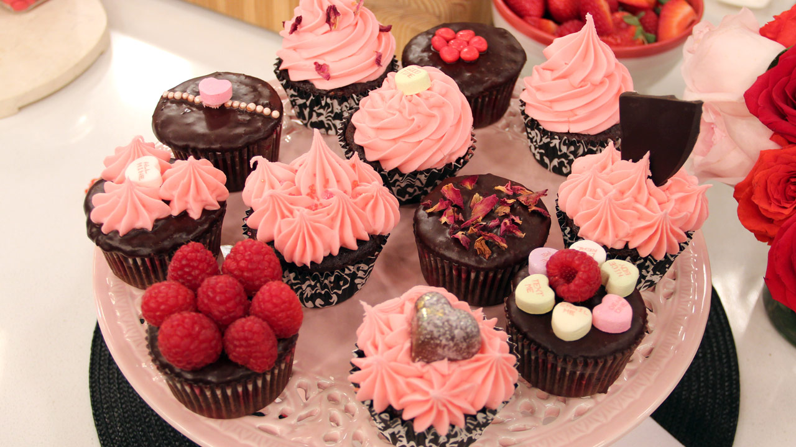

Back to main page
CUPCAKES

Cupcakes are so simple to make, they are easy to eat, look cute, taste wonderful and can be decorated creatively to match the theme of your event. In fact it now seems that more and more people are fast becoming cupcake fans due to their wonderful qualities and truly inspired designs.
Cupcakes have been around for a long time, yet now it seems that they are making a welcome reappearance in today's world. This could be due to the fact that they are so simple to make, appeal to people of all ages and can be decorated in many different ways that makes them highly versatile.
Cupcakes can make a great sweet treat as the alternative to the conventional dessert as cakes or chocolates. They can also work really better when it is served as some special events as the huge parties and the function as it’s simple to plan how many to make, something that is far critical with the cakes. Cupcakes London services are even popular for its special effect.
Another great benefit of the cupcake is the ultimate variety of the different flavor they actually offer and the ability to provide flavors by creating several varieties of the cupcake. One can go for strawberry cake, lemon cupcake or vanilla cupcake and many other flavors also.
With all the benefits, you can surely opt for the delicious cupcake for your upcoming party and make it grand in every way.